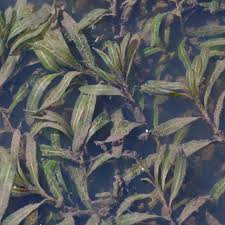

Potamogetonaceae
Pondweed Family
The Potamogetonaceae, commonly known as the Pondweed family, is a cosmopolitan family of aquatic flowering plants found primarily in freshwater environments, with some species tolerating brackish conditions. These perennial herbs play a crucial role in aquatic ecosystems, providing food and habitat for waterfowl, fish, and invertebrates.
Overview
The Potamogetonaceae family consists primarily of submerged or floating aquatic plants anchored by rhizomes. They are found in a wide range of freshwater habitats globally, including ponds, lakes, rivers, and streams. Their presence is often indicative of water quality, although some species, like Curly-leaf Pondweed (Potamogeton crispus), can become invasive under certain conditions.
Pondweeds exhibit significant morphological diversity, particularly in leaf shape, which can range from broad floating leaves to narrow, grass-like submerged leaves, sometimes even on the same plant (heterophylly). Their inconspicuous flowers are typically arranged on emergent spikes and are adapted for wind or water pollination.
Ecologically, Potamogetonaceae are vital components of aquatic food webs. Their leaves and stems provide shelter for small aquatic organisms, while their seeds and tubers are an important food source for migrating waterfowl and other animals. They also contribute to oxygenating the water and stabilizing sediments.
Quick Facts
- Scientific Name: Potamogetonaceae
- Common Name: Pondweed family
- Number of Genera: Approximately 6 (including Potamogeton, Stuckenia, Zannichellia, Groenlandia)
- Number of Species: Approximately 110
- Distribution: Cosmopolitan, primarily in freshwater habitats
- Evolutionary Group: Monocots - Alismatales
Key Characteristics
Growth Form and Habit
Plants are typically perennial herbaceous aquatics, growing submerged, floating, or both. They possess extensive rhizome systems for anchorage and vegetative spread. Some species produce specialized overwintering structures called turions (winter buds).
Leaves
Leaves are highly variable but typically simple and entire. Arrangement is usually alternate, sometimes opposite or subopposite (especially in Groenlandia and Zannichellia). Many species exhibit heterophylly, possessing distinct submerged (often thin, linear) and floating (often broader, ovate or elliptical) leaves. A key feature is the presence of stipules, which are often membranous and may be fused to the leaf base, form a sheath around the stem, or be free.
Inflorescence
The inflorescence is typically a dense or interrupted spike (spadix-like but without a spathe), often borne on a stalk (peduncle) that emerges above the water surface for pollination, though some are submerged. In Zannichellia, flowers are solitary or in small axillary clusters.
Flowers
Flowers are generally small, inconspicuous, greenish or brownish, and actinomorphic (radially symmetrical). They are typically bisexual (perfect), though unisexual flowers occur in Zannichellia. Key features include:
- Perianth: Usually consisting of 4 small, clawed, greenish or brownish tepals (petal-like structures), or sometimes absent (e.g., Zannichellia).
- Androecium: Typically 4 stamens, often attached to the base of the tepals; anthers open outwards. Zannichellia has 1 stamen.
- Gynoecium: A superior ovary composed of (1-) 4 (-8) usually free carpels (apocarpous), each containing a single ovule. Stigmas are sessile or on short styles.
- Pollination: Primarily wind-pollinated (anemophilous) for emergent flowers, or water-pollinated (hydrophilous) for submerged flowers.
Fruits and Seeds
The fruit is an achene or a small drupelet (nutlet), often with a distinct beak formed by the persistent style base. The collection of fruitlets from a single flower is called an etaerio. Fruits are typically dispersed by water (hydrochory) or by animals (endozoochory, epizoochory) that consume them or carry them externally.
Chemical Characteristics
Potamogetonaceae do not possess the complex secondary metabolites characteristic of families like Asteraceae. Their chemistry reflects adaptations to aquatic life, including mechanisms for nutrient uptake from water and sediment, gas regulation for buoyancy, and structural compounds suited for an aquatic environment. They generally lack significant concentrations of tannins or alkaloids found in many terrestrial plant families.
Field Identification
Identifying members of the Potamogetonaceae family relies on recognizing their aquatic habit and specific vegetative and reproductive features:
Primary Identification Features
- Aquatic Habit: Found exclusively in freshwater or brackish environments, typically rooted with submerged or floating leaves.
- Stipules: Look for membranous sheaths at the base of leaves or surrounding the stem. The nature of the stipule (fused to leaf, free, tubular) is often diagnostic for genera or species.
- Leaf Arrangement and Form: Primarily alternate leaves (check for exceptions like Zannichellia), often dimorphic (floating vs. submerged types).
- Inflorescence Type: Dense, emergent spikes (most common) or inconspicuous axillary flowers (Zannichellia).
Secondary Identification Features
- Rhizomes: Presence of underground stems anchoring the plant.
- Turions: Overwintering buds may be present on stems or rhizomes, especially late in the season.
- Fruit Structure: Small achenes or drupelets, often beaked, sometimes found washed ashore or visible on mature spikes.
- Leaf Venation: Parallel venation typical of monocots, but patterns can vary (e.g., prominent midrib, number of longitudinal veins).
Seasonal Identification Tips
- Spring: Look for emerging growth from rhizomes or sprouting turions. Early growth may consist primarily of submerged leaves.
- Summer: Peak vegetative growth and flowering. Floating leaves (if present) and emergent flower spikes are most apparent.
- Fall: Fruits develop on spikes. Turions form on many species. Plants may begin to senesce.
- Winter: Most above-ground growth dies back, but rhizomes and turions persist. Some species (like Potamogeton crispus) may maintain vegetative growth under ice.
Common Confusion Points
Potamogetonaceae can be confused with other aquatic plant groups:
- Hydrocharitaceae (e.g., Elodea, Vallisneria): Often have whorled leaves (Elodea) or basal ribbon-like leaves (Vallisneria), and different flower structures (often with distinct petals, inferior ovary). Lack stipular sheaths typical of Potamogetonaceae.
- Ceratophyllaceae (Ceratophyllum - Hornworts): Have whorled, finely dissected (dichotomously branched) leaves and lack true roots. Flowers are tiny and axillary.
- Haloragaceae (Myriophyllum - Water Milfoils): Have whorled, pinnately dissected (feather-like) leaves.
- Najadaceae (Najas - Naiads): Brittle stems, often opposite or whorled leaves that are finely toothed, inconspicuous axillary flowers. Lack prominent stipules. (Sometimes included within Hydrocharitaceae).
- Ruppiaceae (Ruppia - Widgeonweeds): Found in brackish/saline water, thread-like leaves, different flower and fruit structure on long stalks (peduncles).
Field Guide Quick Reference
Look For:
- Aquatic habitat (freshwater/brackish)
- Rhizomes present
- Stipules (often sheathing)
- Alternate leaves (mostly)
- Submerged and/or floating leaves
- Emergent flower spikes (mostly)
- Small, 4-parted flowers (mostly)
- Fruits are small achenes/drupelets
Key Variations:
- Leaf shape (linear to ovate)
- Heterophylly (different leaf types)
- Stipule fusion (free vs. adnate)
- Flower arrangement (spike vs. axillary)
- Habitat preference (still vs. flowing water)
Notable Examples
The Potamogetonaceae family includes several widespread and ecologically significant genera and species:

Potamogeton natans
Broad-leaved Pondweed
A common species in ponds and slow-moving water, characterized by its conspicuous floating leaves which are leathery, ovate to elliptical, on long petioles. Submerged leaves are linear and phyllodial (stem-like). Produces dense emergent flower spikes.

Potamogeton crispus
Curly-leaf Pondweed
Native to Eurasia but invasive in many regions, including North America. Recognizable by its submerged leaves which are linear, reddish-green with distinctly wavy or crisped margins and serrulations. Often grows early in spring and forms dense beds. Produces turions.

Stuckenia pectinata
Sago Pondweed
(Formerly Potamogeton pectinatus) Found in fresh to brackish waters, this species has highly branched stems and narrow, thread-like leaves arising from sheathing stipules. Produces numerous small tubers (rich in starch, hence 'Sago'), making it a crucial waterfowl food.

Zannichellia palustris
Horned Pondweed
A delicate, submerged plant with thread-like stems and typically opposite, linear leaves. Stipules are sheath-like but less conspicuous than in Potamogeton. Flowers are unisexual, tiny, and axillary. Fruits are small, curved achenes often clustered together, giving a "horned" appearance.
Phylogeny and Classification
Potamogetonaceae belongs to the order Alismatales, a large and diverse group within the monocots. The Alismatales are considered an early-diverging lineage of monocots and contain a high proportion of aquatic and wetland plants. Potamogetonaceae is central to this order and represents a significant radiation into freshwater habitats worldwide.
Molecular phylogenetic studies confirm the monophyly of Potamogetonaceae (often including Zannichellia, though sometimes placed in its own family Zannichelliaceae). It is closely related to other aquatic families within the Alismatales. The family's evolutionary history is tied to the adaptation and diversification within aquatic ecosystems, likely dating back to the Cretaceous period.
Position in Plant Phylogeny
- Kingdom: Plantae
- Clade: Angiosperms (Flowering plants)
- Clade: Monocots
- Order: Alismatales
- Family: Potamogetonaceae
Evolutionary Significance
The Potamogetonaceae exemplify successful adaptation to the challenges of aquatic life. Key evolutionary features include:
- Adaptations for Aquatic Pollination: Shift from insect pollination (ancestral) to wind or water pollination.
- Vegetative Propagation: Extensive use of rhizomes and turions for survival and dispersal in dynamic aquatic environments.
- Heterophylly: Development of different leaf forms optimized for submerged gas exchange and floating photosynthesis/support.
- Structural Modifications: Reduced woody tissue, presence of air channels (aerenchyma) for buoyancy and internal gas transport.
- Global Distribution: Successful colonization of diverse freshwater habitats across the globe, indicating high ecological adaptability.